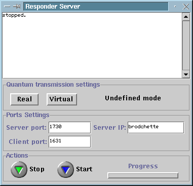

Responder Server
The responder server is a process responsible for
providing to the responder player
a connection to the quantum channel. The quantum channel can be real or
virtual. In the case of a virtual quantum transmission, the respondor server
simulates a quantum channel by communicating classically with the initiator
server (through an IP connection). When the quantum communication is
real, the responder server connects also to the quantum channel. This is
through a normal IP connection with the so-called quantum
data grabber. Typically, the responder server runs on the same machine
than the respondor player. When run, the responder server looks as
follow:

The top window shows information to the user as the server
is running. In addition, the responder server window contains the following
items gathered in 3 groups:
Quantum transmission settings:
-
Virtual button: allows to define the error-rate for
the next virtual quantum transmission on the responder side. A received
virtual qubit willl be flipped with the selected probability when
it is detected.
-
Real button: allows to select the IP address and the
port number for the connection to the quantum channel or more precisely
to the quantum data grabber.
-
The right-label indicates after connection with the
initiator
server (and after a request has been made by the initiator
player) whether the next quantum transmission will be virtual
or real. The quantum transmission to take place can be one of the
two supported schemes:
Ports Settings:
-
The Server IP is the IP address of the initiator server.
When the responder server is launched, it tries to connect to the
initiator
server.
-
The Server Port is the port number at which the responder
server connects to the initiator server.
-
The Client Port is the port number at which the responder
server waits for a connection with the responder
player.
Actions:
-
The start/stop button are used to start or to stop
the server. For the time being, for each quantum transmission the responder
server must be restarted and a new connection with the initiator
server must be established. After each transmission, the server stops.
If the stop button is pressed while the server is running then the execution
is aborted. The responder server must be started after the initiator
server but before the responder player.
-
The progress bar indicates the progress during quantum
transmission.
Security Issues:
The connection between the responder
server and the responder player must be private
in order for the quantum protocol to be implemented securely. This can
be achieved by running both the initiator server and the initiator player
on the same machine.
The connection between the responder
server and the initiator server does not
need to be private but should be authenticated. Authentication is
not provided by the current implementation.